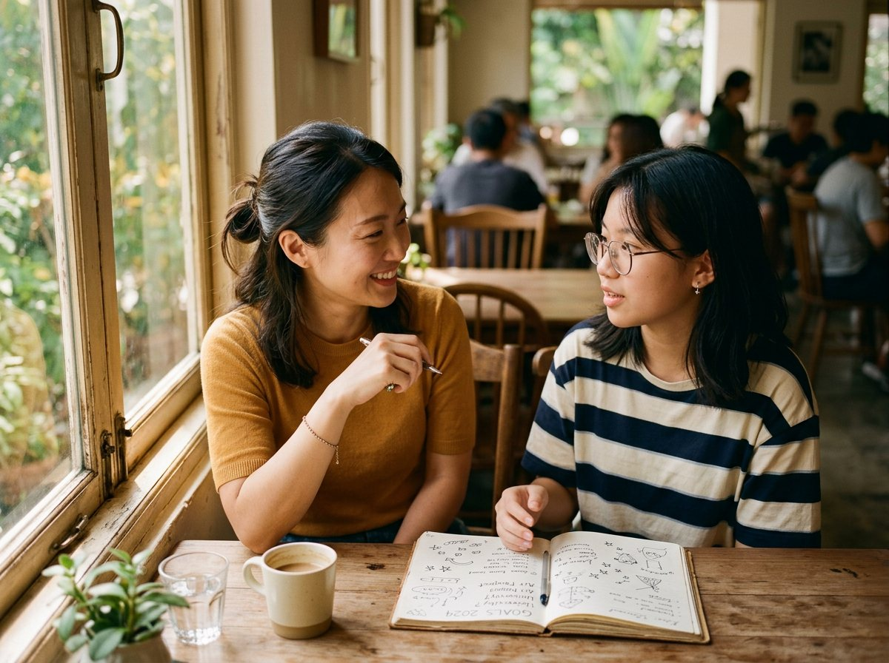

← back to everything

guide the room
Facilitation
Guiding people — and the young leaders among them — to the moment it finally clicks.
Guiding people — and the young leaders among them — to the moment it finally clicks.
Hosting is holding a room. Facilitation, for me, is something quieter: guiding. I love the slow work of walking alongside someone until they reach their own aha — the moment a goal gets clear, or a shy kid realises they can lead.
From children to youths, the job is the same: create a space safe enough for honesty, then guide people gently toward what they're capable of. Safe, playful, intentional — that's the whole method.
Reflection circles · goal-setting sessions · youth leadership facilitation · community project facilitation

Jocelyn is such a great listener — like she properly listens — and then asks the one question that makes you think harder about your own answer. I left understanding myself a bit better than when I walked in.
— Student, facilitated reflection session
She creates this safe space around her. She's fun to be around, and she doesn't judge. So it's easy to open up even about the harder stuff.
— Participant, youth workshop